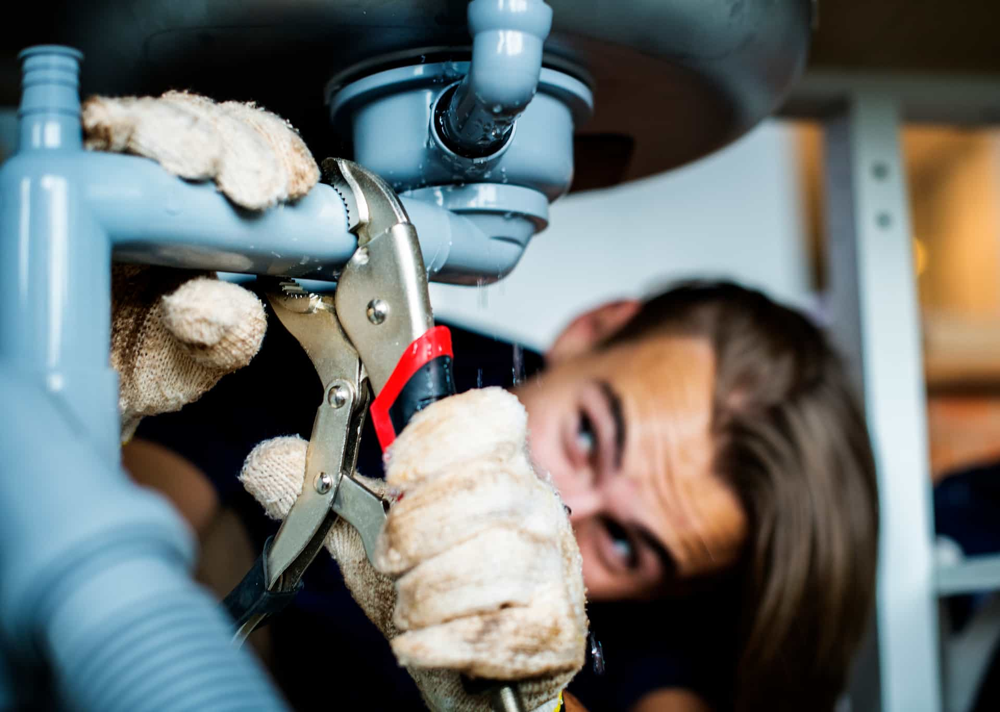
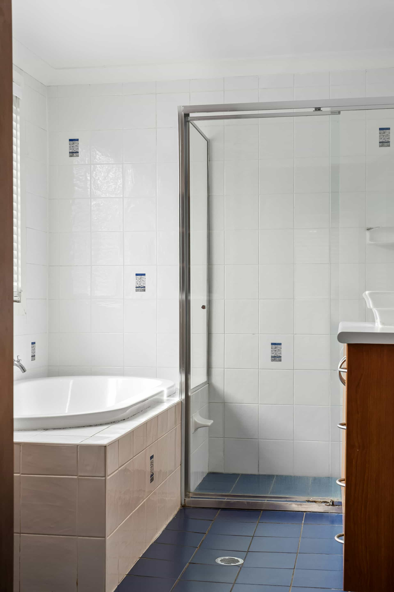
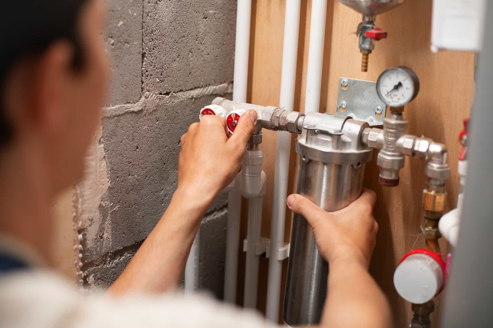
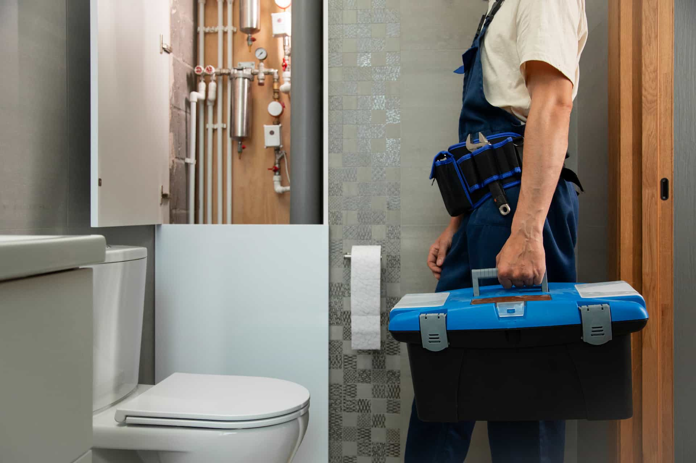
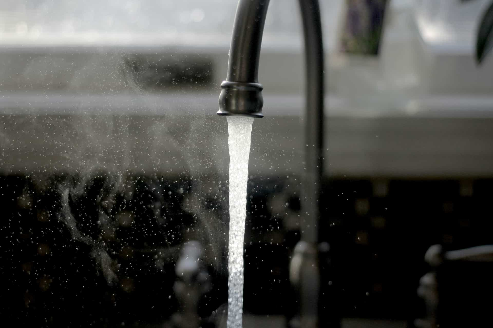

Emergency Plumbing Help
Urgent water events, burst lines, backups, and time-sensitive plumbing problems that call for quick local response conversations.
Open service pageThe services catalog is designed to help homeowners choose the right request path before they speak with a provider. Each page is written around the actual symptom, project type, or urgency level that usually drives the search.

Urgent water events, burst lines, backups, and time-sensitive plumbing problems that call for quick local response conversations.
Open service page
Recurring clogs, sluggish drains, sewer-related flow issues, and line cleaning requests from kitchens, baths, and whole-home systems.
Open service page
New plumbing layouts, remodel support, fixture additions, appliance hookups, and project-based estimate requests.
Open service page
Whole-home repipes, aging system upgrades, and large replacement conversations where homeowners want broader scope clarity.
Open service page
Hidden leak concerns, moisture clues, slab symptoms, and water bill spikes that suggest a concealed plumbing issue.
Open service page
Tank and tankless troubleshooting, hot-water loss, replacement planning, and setup-related estimate requests.
Open service page
Running toilets, weak flushing, resets, leaks at the base, replacements, and bathroom install requests.
Open service page
Dripping faucets, worn hardware, shower fixture changes, sink updates, and visible finish refresh projects.
Open service pageWhen homeowners choose the page that best matches the actual issue, the first provider conversation usually starts with better scope, clearer urgency, and fewer back-and-forth questions.
Use the phone option for urgent or unclear situations, or send a request describing the problem in your own words for a more detailed next step.